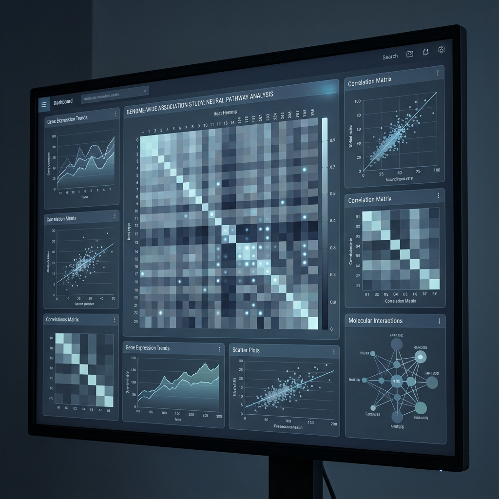

Latest News
- Dec 2025: Dataset v1.2 released with calibrated sensor noise models.
- Oct 2025: Paper accepted at ICML 2026.
Abstract
Understanding high-dimensional data distributions remains a core challenge in modern experimental physics and machine learning. This work presents the HD-Dataset, a meticulously curated collection of multi-modal observations.
Methodology
Our pipeline utilizes state-of-the-art sensors synchronized via a centralized temporal alignment system. Data is processed through a three-stage noise reduction filter.
Fig 1. Schematic representation of the pipeline.
The Team
YP
Yuri Petralia
Lead Researcher
JD
Jane Doe
Data Scientist
Citation
@article{petralia2026hdp,
title={HD-Dataset: High-Dimensional Experimental Physics Inference},
author={Petralia, Yuri and Doe, Jane},
journal={Journal of Computational Science},
year={2026},
doi={10.1234/hd-dataset.2026.01}
}